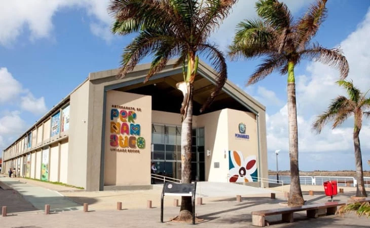

Ponto turístico: Centro de Artesanato de Pernambuco
O Centro de Artesanato é parada obrigatória para os turistas que querem levar para casa uma lembrança da viagem. A grande loja conta com mais de 25 mil peças produzidas por artesãos de todo o estado. O espaço é extremamente bem organizado e tem ambientes decorados para que o visitante possa visualizar a utilização das peças nos diversos ambientes da casa.
